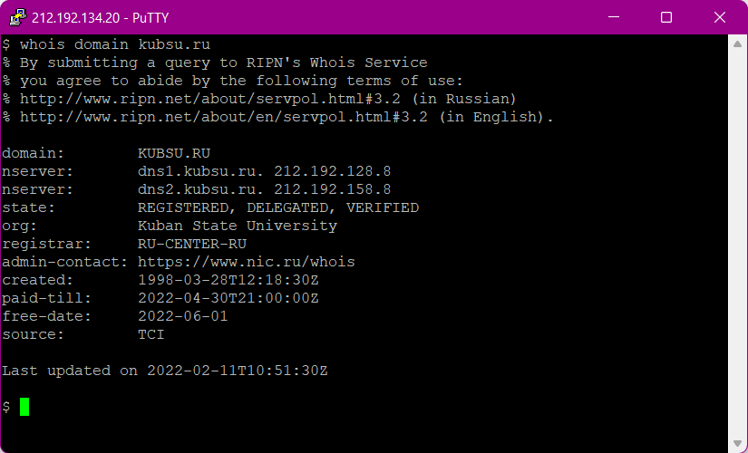
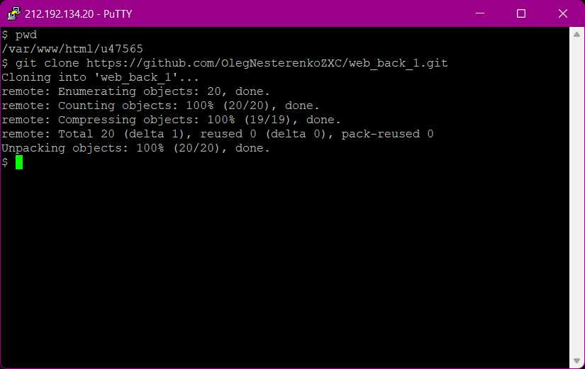
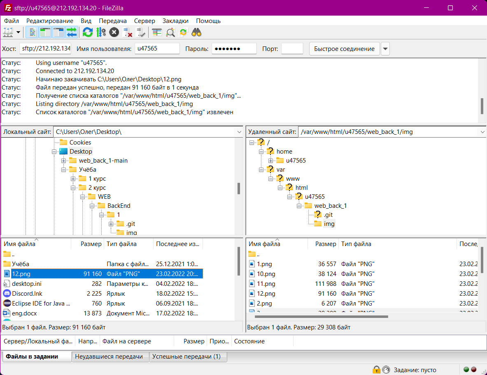

Команда ping
Программа передает небольшой пакет с данными и ожидает получить обратно пакет ответа, если получает, то считается что удаленный узел доступен. С помощью команды ping можно узнать время за которое пакет доходит до сервера и информацию о потере пакетов.
Команда nslookup — инструмент сетевого администрирования для запросов в DNS с целью получения доменного имени, IP-адреса или другой информации из записей DNS.
lookup -A запись
A - address

lookup -MX запись
В каждой MX-записи хранятся два поля: имя почтового сервера, который обслуживает домен и порядковый номер, по которому определяется какой сервер первым будет обрабатывать запросы клиентов.

whois
Его основное предназначение – получение в текстовом виде регистрационных данных о владельцах IP адресов и доменных имен.

Клонирую с github репозиторий с помощью git clone
Переношу файл image12.png на сервер.
Изменяю локально на своём компьютере файлы проекта, с помощью команды git push загружаю новую версию локального репозитория на github.
Загружаю с github новую версию проекта с помощью git pull, а с помощью git stash применяю изменения на сервере.